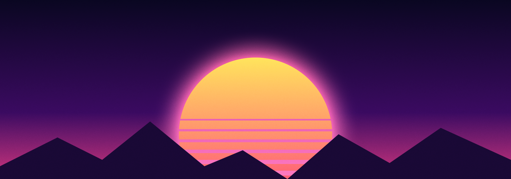
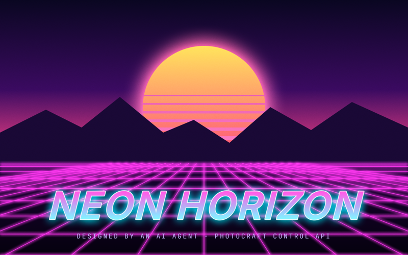
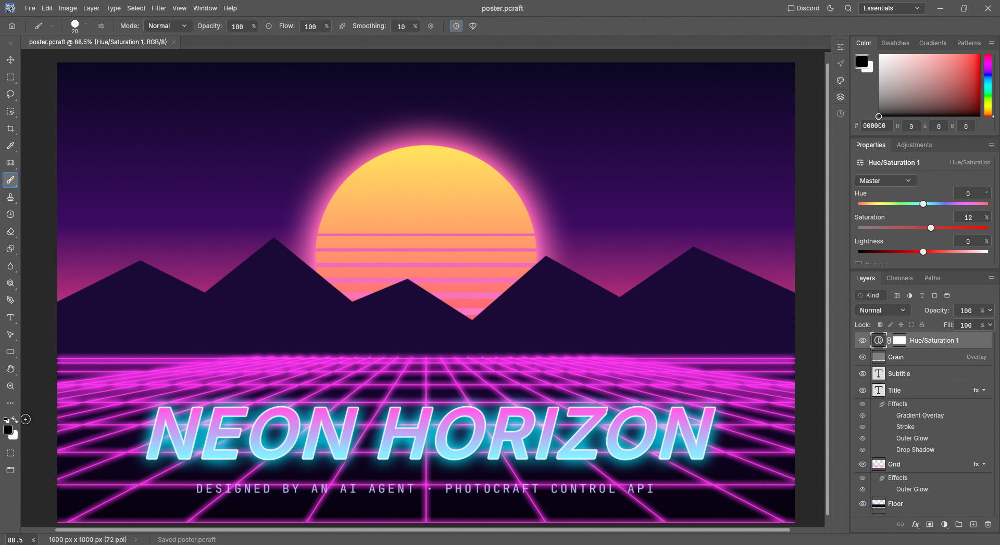
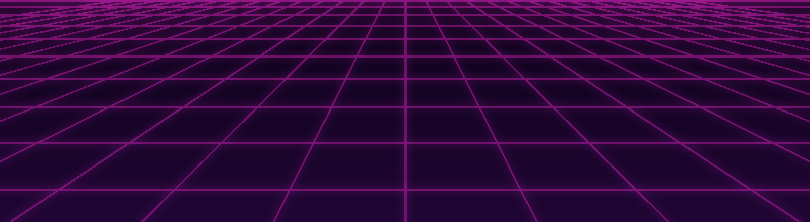
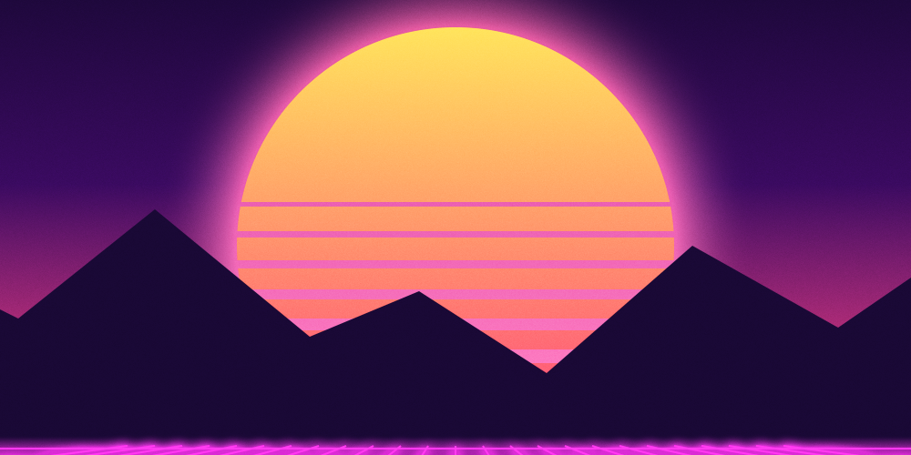

PhotoCraft becomes a section of Rocket, like the Browser and the Library. Any provider in the chat can run every PhotoCraft command, bring in images from the web or from Codex's image generator, and save or export the result. You can click into the same canvas at any time.



photocraft · place

Web✓ placed
Codexapps/photocraft-web: egui in the browser, WebGPU with a WebGL2 fallback) runs in a Rocket view beside the chat, the same way a browser tab does. It looks and works like the desktop app.
--control. Our fork adds one to the web build that calls the same command registry.command_run, command_batch, command_list, doc_new / open / save / export / inspect, ui_screenshot, ui_pointer, ui_menu_invoke, ui_set, plus place for putting an image in as a layer.
web_search, web_read and browser_download tools.image_generate tool runs Codex's built-in generator (gpt-image-2), so Claude or Cursor can ask for an image too. A Codex turn uses it directly. Image turns use Codex usage 3–5× faster than text, so the Codex meter is shown.photocraft {doc?}. Actions photocraft.open {path}, photocraft.export {format, path}, photocraft.takeOver, photocraft.handBack, photocraft.stop. Its state lives in store.ts, so the toolbar buttons and the models go through the same dispatcher.